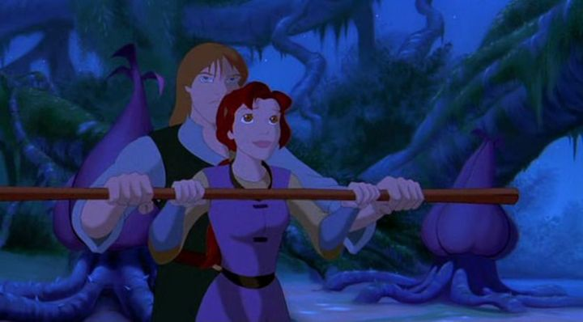

Disclaimer: This is a review of the 1998 animated film "Quest for Camelot," also known as "The Magic Sword" in some countries outside the USA.If you know where to look, you can find plenty of fans online begging for their favourite childhood films to be released on Bluray, or at least a remastered DVD. As of 2023, no such release exists for the 1998 film "Quest for Camelot," and the lack of any HD digital release suggested nothing would ever come (perhaps because the source footage just isn't there to remaster it). I gave in and finally purchased an old DVD to upgrade my old childhood VHS copy. Partly because at this stage, it seems unlikely for any remaining films to be released on Bluray, nearly two decades after the disc was invented. And more importantly, because this film in particular has virtually NO fanfare asking for it. Movies like "Cats Don't Dance" or "Titan A.E."? Sure. But not a peep for "Quest." That's a disappointment and point of confusion for me. When I first saw the movie as a kid, I was impressed and liked it quite a bit. Was this just nostalgia and rose-coloured glasses? Perhaps rewatching the movie as an adult, not having seen it for more than a decade, would help me understand the lack of love for it. Sure enough, the movie isn't as great as I remember, especially in the technical side. But I stand by that it IS very good, and that it still gets overlooked so easily is a great shame. The movie starts with a young and bold girl, Kayley, proud of her father, a knight of the Round Table, serving King Arthur in the building of the peaceful and prosperous kingdom of Camelot. Her father joins a convening of the knights and the King to discuss fairly assigning plots of land to its citizens based on their need. The movie's villain, Sir Ruber (pronounced "Rube-ar," not "Rubber" as I first thought as a kid) makes his impatience and greed clear, demanding he get a larger share of land and wealth for his work for the kingdom, and he attacks King Arthur when he's denied. Kayley's father is killed in the brawl while Ruber runs off. Kayley grows up without her father, still yearning for one day becoming an adventurous knight herself (a dream her father encouraged) instead of being stuck on the family farm. Now a young adult, Ruber returns to exact his revenge, sending his pet griffin to steal Arthur's magic sword Excalibur, and using Kayley's mother as a hostage to enter the kingdom and kill a vulnerable Arthur. Kayley escapes, and when learning that Excalibur was lost over the Forbidden Forest, makes a gamble to find the sword herself instead of rushing to warn the Kingdom of the impending attack. Along her quest, she meets a few unlikely heroes that join her: a blind and ruggedly-handsome hermit named Garrett, and a two-headed flightless dragon named Devon and Cornwall. Ruber and his minions chase after them, as having the sword is key to his plan of attack. One of the cool things about the story is how forward-thinking it was at the time. Tired of girls only being princesses and damsels in distress? Here, we have a girl as the lead hero! Yes, it's a little trite to see such an obvious "girls can do anything boys can" role, and it was even in 1998. But such roles were rare back then, and still are: even Disney's latest heroines two decades later tend to still be princesses, albiet ambitious ones. The movie doesn't really feel like it's talking down to the audience to convince us that Kayley can save the day, she's just a strong and brave character. The same can be said about Garrett, a very rare blind leading-man, who makes clear he can do fine on his own without sympathy. And the two-headed dragon... is just comic relief, but still. The original pitch was probably focused on this gang being a band of misfits to show how anyone willing to step up can save the kingdom, but I didn't feel that any of them were ever any less than Arthur's bravest knights.  Another high-point is the rendering and portrayal of Camelot in this movie. It's a popular setting, but every movie seems to have a unique spin on it. In this film, it's heavily Celtic-inspired with clean and sterile design, and feels like a complete setting with its own culture. It's wonderful. Compare this to prior attempts at fantasy in animation: Disney's "The Sword in the Stone" and "The Black Cauldron" come to mind, both weak in different ways in their portray of the setting. "Quest" showed how to do it right, and still stands of my mental picture of Camelot to this day.This is a Disney-style musical, and the songs are probably much better than you're expecting, at least on par with Disney's in terms of quality. There's a surprisingly strong voice cast in the movie, including Cary Elwes (from "The Princess Bride") as Garrett and Pierce Brosnan and King Arthur. And Eric Idle (from "Monty Python" / "Spamalot") and Don Rickles (the "don" of comedy roasts) as the two headed dragon! Talk about inspired casting! Some roles switch out for the songs: Celine Dion and Steve Perry both sing as Kayley's mother and King Arthur respectively. As expected, everyone's pretty good... mostly.Gary Oldman voices the big bad villain, Ruber. Yes, THAT Gary Oldman, known today as one of the best actors in the business. In his early career, he was known for playing over-the-top bad guys, and that's the sort we're getting here. Even as a kid, I wasn't sure what to think of it. Ruber is self-professed as a madman, with a bizarre skull silouhette and oily orange hair, and a twitching eye and a animated snarl at all times. It's extremely campy, as if the character stepped out of an 80's rock-opera. He's plenty menacing and fun, but he's also distracting and takes away from the movie - in later attempts to thwart Kayley's group, he becomes less dangerous and more like Wile. E. Coyote. Generally, the movie's story also isn't very complex or well written beyond the archtypes chosen for the heroes. This is clearly written for and animed at children, with colourful locales and threats that change minute to minute. Adults might get bored quickly, or roll their eyes at the multiple pop-culture references sprinkled here and there (primarily from Warner Bros. classic live-action movies). I remember the animation looking better as a kid. As an adult, I can now clearly see shortcuts, such as characters animated at a reduced framerate in complex scenes with crowds. For some reason, lip-syncing is off for many scenes, even for main characters, an issue I typically see in television animation when the script isn't done yet, or when the work was outsourced to a foreign team. While Camelot itself and the characters have cool design choices, the Forbidden Forest (where much of the movie takes place) has some inspired but odd flora and fauna, looking manufactured instead of magically natural. The movie is still a decent effort, and like a lot of animated work from the 90's, looks better than a lot of work that has come since, but it's not the best the decade had to offer. The old DVD certainly doesn't help to convey the quality - it looks like it was mastered from a widescreen VHS copy (strangely, mine was a double-sided DVD, with bonus features on the back, and only the film on the front, perhaps because dual-layer double-capacity DVD's weren't a thing yet). "Quest for Camelot" is probably best meant for children, but even some adults should enjoy the portrayal of Camelot's kingdom and the upbeat songs. I'll keep my DVD copy just in case, and I'll continue to hope for a Bluray. But that almost never happens now unless passionate fans rally behind it. "Quest" has remained lost and forgotten, and I hope a new audience rediscovers it one day.
- "Ani" More reviews can be found at : https://2danicritic.github.io/ Previous review: review_Puss_N'_Boots_-_Around_The_World Next review: review_Race_for_Your_Life,_Charlie_Brown,_Bon_Voyage,_Charlie_Brown